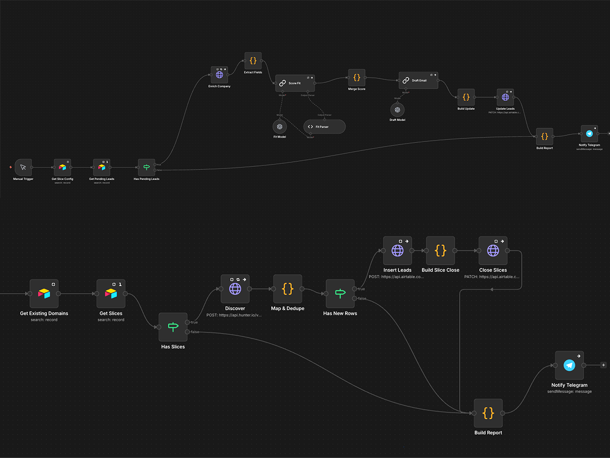

NexTrade Advisory
Lead sourcing system
The task
Finding new clients was a full-time job nobody had time for: which companies fit, who decides inside, a real email address, a message that doesn't read like a template.
What I did
- Every lead arrives scored, with the person who decides by name and title.
- Each email is checked against the mail server, so nothing bounces.
- A message written for that company waits in a private dashboard: read, adjust, send.
What changed
See the project →
100 enriched leads in minutes. In the first 20 delivered, all 20 had a named person and 18 emails were confirmed by the receiving server. The time that went into searching now goes into conversations.